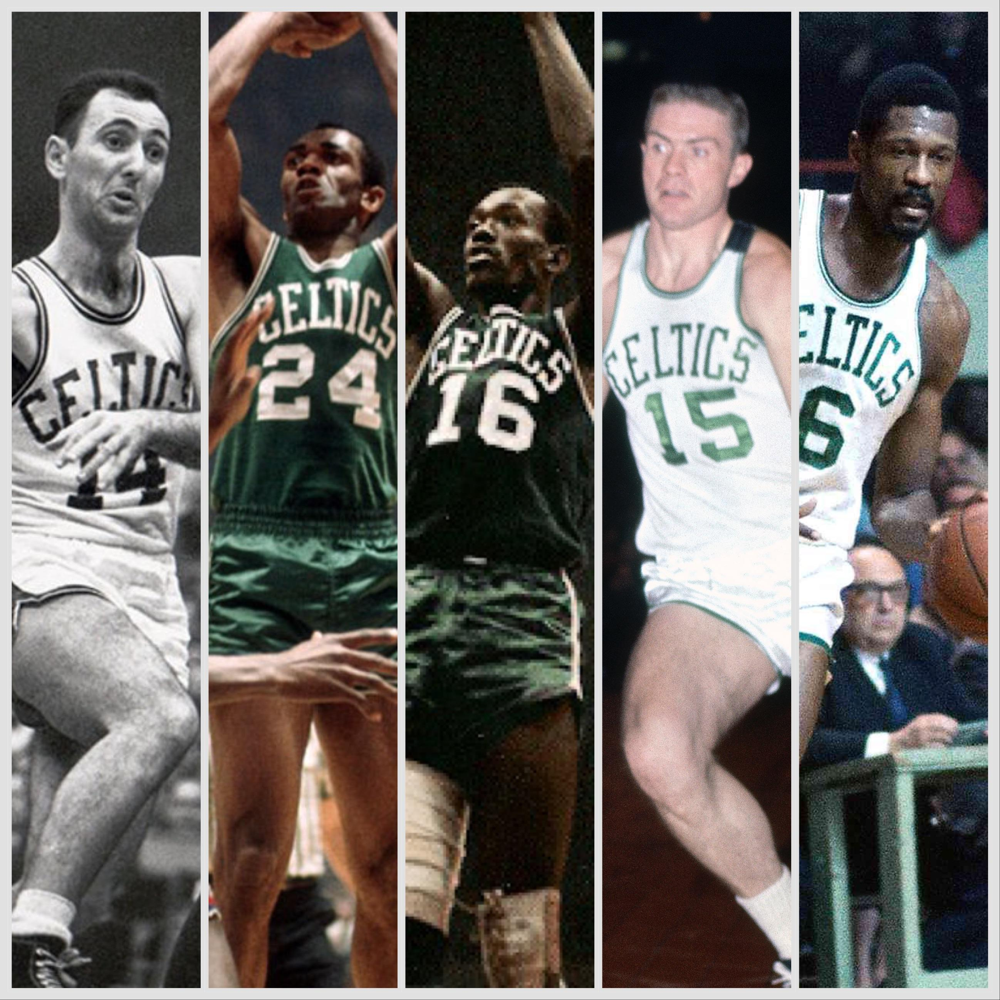
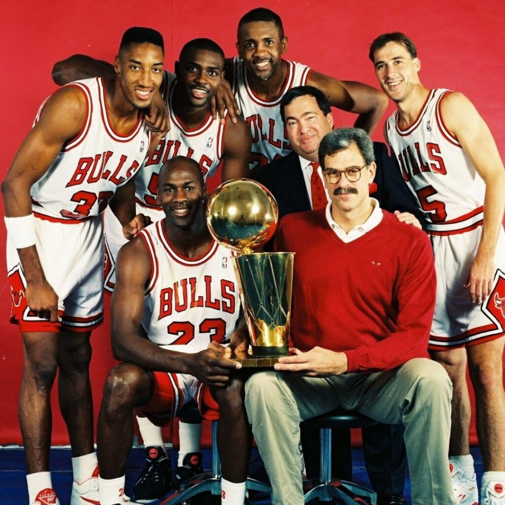
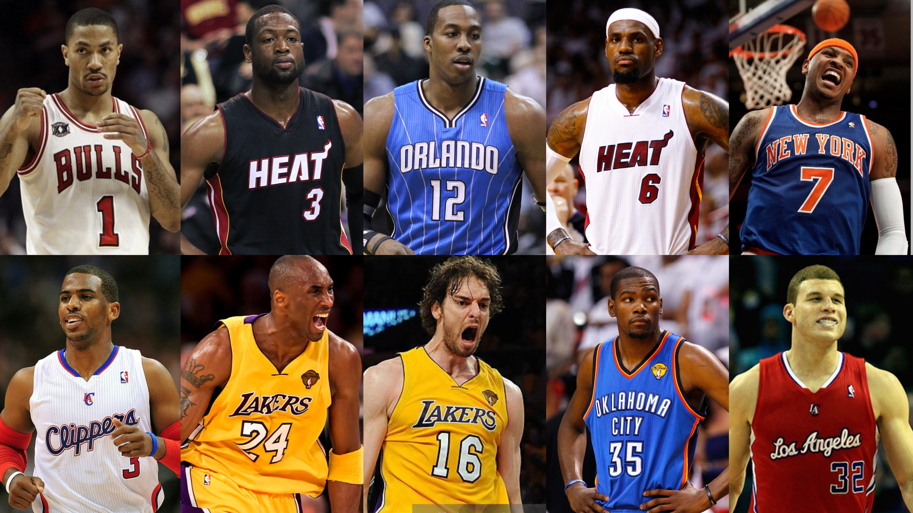

História
A National Basketball Association (em português: Associação Nacional de Basquetebol; abreviação oficial: NBA) é a principal liga de basquetebol profissional da América do Norte. Com 30 franquias (29 nos Estados Unidos e 1 no Canadá), a NBA também é considerada a principal liga de basquete do mundo. É um membro ativo da USA Basketball (USAB), que é reconhecida pela FIBA (a Federação Internacional de Basquetebol) como a entidade máxima e organizadora do basquetebol nos Estados Unidos. A NBA é uma das 4 'major leagues' de esporte profissional na América do Norte. Os jogadores da NBA são os atletas mais bem pagos do mundo, por salário médio anual.
Criação e fusão (1946–1956)
A BAA (Basketball Association of America) foi fundada em 1946 pelos proprietários das principais arenas de Hóquei no gelo no Nordeste e no Centro-Oeste dos Estados Unidos e Canadá. Em 1 de novembro de 1946, em Ontário, Canadá, o Toronto Huskies recebeu o New York Knickerbockers, no Maple Leaf Gardens, em um jogo que a NBA agora considera como o primeiro jogo em sua história. Apesar de ter havido tentativas anteriores de criar ligas de basquete profissional, incluindo a American Basketball League e a NBL, a BAA foi a primeira liga à tentar jogar em grandes arenas nas grandes cidades. Durante seus primeiros anos, a qualidade do jogo na BAA não foi significativamente melhor do que nas ligas concorrentes ou contra os principais clubes independentes, como o Harlem Globetrotters. Por exemplo, o finalista da ABL de 1948, Baltimore Bullets, mudou-se para a BAA e conquistou o título da liga em 1948, e o Minneapolis Lakers, campeão da NBL em 1948, ganhou o título da BAA em 1949.
Dominância dos Celtics, expansão da liga e concorrência (1956–1979)
Em 1957, o pivô rookie Bill Russell se juntou aos Boston Celtics, que já possuía membros como o armador Bob Cousy e o técnico Red Auerbech, e levou o clube à 11 títulos da NBA em 13 temporadas. O pivô Wilt Chamberlain entrou na liga em 1959 no Warriors e se tornou a grande estrela individual dos anos 1960, estabelecendo o novo recorde de pontos em um jogo (100) e rebotes num jogo (55), recordes mantidos até hoje. A rivalidade Chamberlain-Russell se tornou uma das maiores da história de todos os esportes americanos.
Os anos 1960 foram dominados pelos Celtics. Liderados por Russell, Cousy e Auerbech, Boston ganhou 8 títulos seguidos da NBA entre 1959-66. Essa série de títulos é a maior da história da liga. Eles não ganharam o título em 1966-67, mas ganharam em 1967-68 e novamente em 1968-69. A dominação totalizou 9 títulos na década de 1960.

Ascensão na popularidade (1979–1998)
A liga adiciona o inovador arremesso de três pontos do ABA para abrir mais o jogo em 1979. O mesmo ano, os calouros Larry Bird e Magic Johnson se juntaram aos Celtics e aos Lakers, respectivamente, iniciando um período de aumento significativo no interesse dos fãs através dos Estados Unidos e do mundo. Em 1984, eles jogaram um contra o outro pela primeira vez nas finais da NBA. Johnson, junto de Kareem Abdul-Jabbar e James Worthy, liderou os Lakers a cinco títulos da NBA e Bird, junto de Kevin McHale e Robert Parish, levou a equipe a três títulos. Também no começo dos anos 80, a NBA adicionou um novo time de expansão, o Dallas Mavericks, levando a quantidade de equipes a 23. Outras equipes de destaque foram o 76ers de Julius "Dr. J" Erving, campeão em 1983 e o Detroit Pistons que com um time muito físico apelidado "Bad Boys", liderados por Isiah Thomas, Chuck Daly e Dennis Rodman, chegou a três finais seguidas e dois títulos em 1989 e 1990. David Stern assumiu o cargo de comissário da liga em 1 de Abril de 1984 e comandou a expansão e crescimento da NBA para um nível global. Hakeem Olajuwon entrou na liga em 1984 com o Houston Rockets, fornecendo uma estrela ainda mais popular para ajudar o aumento de interesse na liga. Isso resultou em mais cidades interessadas em ter uma equipe pertencente a ela. Em 1988 e 1989, quatro cidades tiveram seu desejo realizado com Charlotte Hornets, Miami Heat, Orlando Magic e Minnesota Timberwolves fazendo suas estreias na NBA, fazendo um total de 27 equipes. Após três anos seguidos perdendo para o Pistons, o Chicago Bulls de Michael Jordan e Scottie Pippen, junto com o técnico Phil Jackson, se tornariam a equipe dominante dos anos 90, com seis campeonatos entre 1991 e 1998, sendo duas sequências de três títulos. Olajuwon venceu dois títulos consecutivos com os Rockets em 1994 e 1995.

Anos recentes e internacionalização (1998–presente)
A liga começou a década de 2000 a investir na importação de grandes jogadores de diversas nações, como o espanhol Pau Gasol, o chinês Yao Ming, o alemão Dirk Nowitzki, o brasileiro Leandrinho Barbosa e o argentino Manu Ginóbili. A maioria dos jogadores de países de língua inglesa jogam em universidades americanas antes de ir para NBA, como o canadense MVP de 2005 e 2006 Steve Nash, e o australiano Andrew Bogut. Assim a NBA consegue um público internacional cada vez maior, sendo transmitida para 215 países por 90 canais em 47 idiomas.
A NBA chegou ao número atual de 30 equipes com a fundação do Charlotte Bobcats em 2004 para compensar a saída do Hornets para Nova Orleans em 2002. Outras relocações incluíram a saída do Grizzlies do Canadá para Memphis em 2001, a mudança do SuperSonics para Oklahoma City (que havia abrigado o Hornets enquanto Nova Orleans se recuperava do Furacão Katrina) para se tornar o Oklahoma City Thunder em 2008, e o returno dos New Jersey Nets para Nova York como Brooklyn Nets em 2012.
